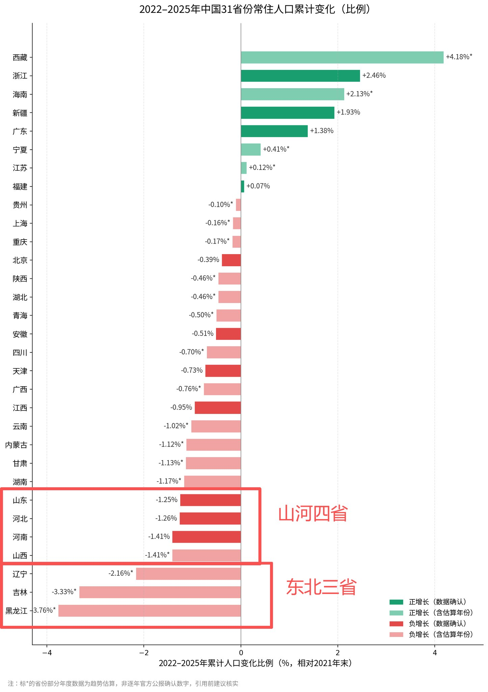
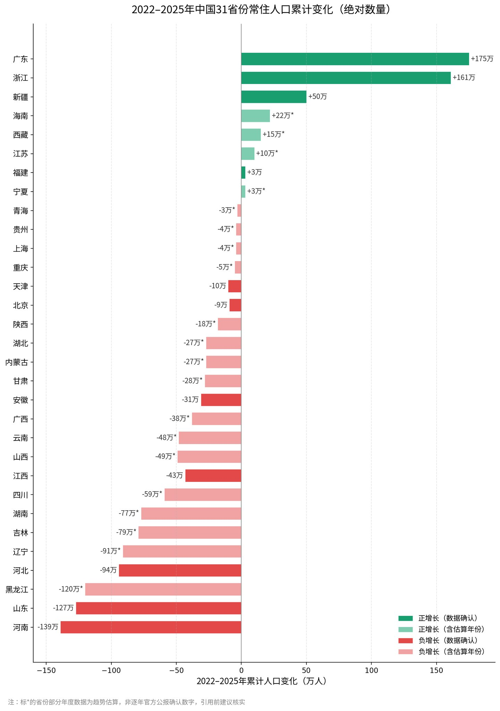

#3 · ShannonHar2140 · 2026-07-04T10:47:04.000Z6万是底，回到前高12.6万，仅仅翻一倍。4万是底，回到前高，翻3倍。3万是底，回到前高，翻4倍。6万是底，即使涨到9万，也仅仅涨了50%。3万是底，涨到9万，已经翻了三倍。
#5 · giantcutie666 · 2026-07-04T04:10:57.000Z中国人口自2022年开始进入负增长，各省开始抢人，这是中国人这四年来用脚投票的结果：东三省人口流失最严重，无可救药紧随其后的是山河四省不知道是不是因为不卷，新疆、西藏的人口都大幅度增长在人口大省中，只有广东在生娃，有自然增长而浙江、海南、江苏都在吸其他省市的流入人口